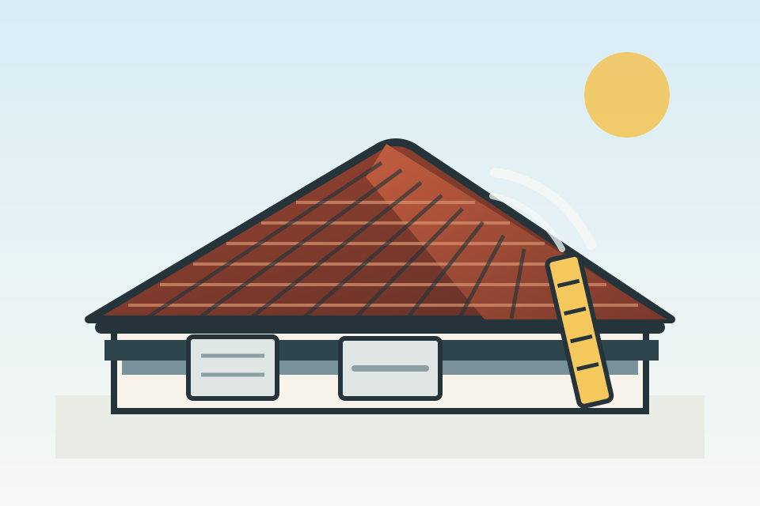

Brisbane roof restoration
Roof repairs and restorations built for Brisbane homes.
Precision Roof Restore helps homeowners sort roof restorations, capping, resprays, repairs, gutters, and pressure cleaning with a clear inspection and quote path.
Serving Brisbane homeowners. Share the suburb and roof issue, and the next step can be confirmed by phone.

What gets checked
A roof quote should start with the actual roof.
Surface condition
Look for tired coating, weathering, cracked tiles, and areas that need cleaning before a respray or restoration.
Edges and capping
Check ridge capping, roof joins, and visible problem spots that can turn small defects into bigger repair work.
Water flow
Gutters, downpipes, and roof fall matter when Brisbane storms hit. The quote should account for drainage.
Services
Practical roofing work, explained plainly.
Roof restorations
Clean, repair, prepare, and refresh an ageing roof so it presents better and handles the weather properly.
Capping
Inspect and repair ridge capping and roof joins where movement, cracking, and gaps can let water in.
Respray
Refresh roof colour after cleaning and preparation, with attention to coverage, edges, and visible finish.
Repairs
Find and address practical roof problems such as cracked tiles, leaks, loose sections, and damaged flashing.
Gutters
Check, clean, and repair guttering so water moves away from the roofline instead of pooling or spilling back.
Pressure cleaning
Remove built-up grime, moss, and staining so roof condition is clearer and surfaces are ready for restoration work.
Why call
Clear next steps before anyone talks you into a job.
The aim is simple: understand the roof issue, confirm whether the job is in the Brisbane service area, and explain the quote path without pretending every roof needs the same fix.
Describe the roof problem
Call or send an enquiry with the suburb, roof type if known, and what you are seeing: leaks, faded coating, gutters, capping, or cleaning.
Confirm fit and service area
If the job is outside the practical service area or needs a different trade first, the call should make that clear early.
Arrange inspection and quote
For suitable jobs, the next step is an inspection and a straightforward quote based on the actual roof condition.
Contact
Ask for a roof inspection or quote.
Prefer to talk now? Call Precision Roof Restore and describe the roof issue.
Include your suburb and the service you need so the call-back can be useful.